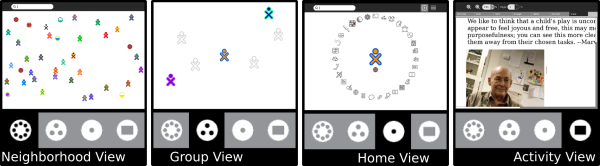

The Sugar User Interface¶
The Sugar platform encourages learning through personal expression.
The user interface differs from the traditional Desktop metaphor. It uses a “zooming” metaphor—each view represents a different scale of interaction. You move between a view of the network “neighborhood”, your “friends”, your “home page”, and your currently open application (“Activity”). Each view occupies the entire screen. There are no overlapping windows to deal with.

With Sugar, you zoom between views: from your network neighborhood to your current Activity.
Sugar supports sharing and collaboration by default. Sugar brings many of the rich collaboration mechanisms we are accustomed to from the Internet directly into the user interface. Sharing a file, starting a chat, collaborating in a writing exercise, or playing a game with other people are never more than a single click away.
Sugar incorporates a Frame around the border of the screen; the Frame holds status information, such as alerts, a clipboard, open activities, and your current collaborators.
Sugar maintains a Journal (or diary) of everything you do; it is a place for reflection. You do not need to save files or create folders; Activities automatically save your work to the Journal.
Sugar emphasizes discovery. Every object in the interface has a menu that reveals more details and options for action. Many Activities include a “view source” option; for example, the Browse activity lets you examine the HTML code that reveals how a web page is created. Most Activities are written in the Python scripting language. You can see how they work, and make changes to them.
Sugar has clarity of design. There is no need to “double click”. There are no overlapping windows. Sugar uses color and shape throughout the interface to provide a fun, expressive, approachable platform for computing.
For parents and teachers¶
Activities, not Applications
Sugar does not have applications in the traditional sense. Activities are distinct from applications in what they focus on (collaboration and expression) and in their implementation (journaling and iteration). This is more than a new naming convention; it represents an intrinsic quality of the learning experience we hope the children will have when using Sugar.
Presence is always Present
Everyone has the potential for learning and teaching. Sugar puts collaboration at the core of the user experience in order to realize this potential. The presence of other learners encourages children to take responsibility for others’ learning as well as their own. The exchange of ideas amongst peers makes the learning process more engaging and stimulates critical thinking skills. Sugar encourages these types of social interaction with the laptops.
Most activities have the potential to become network enabled. For example, consider the Browse activity. With typical computer interfaces, you browse in isolation. In Sugar, sharing links is an integral part of Browse, transforming web-surfing into a group collaboration.
Tools of Expression
Sugar emphasizes thinking, expressing, and communicating using technology. Sugar starts from the premise that we want to use what people already know in order to make connections to new knowledge. Computation is a “thing to think with”. Sugar makes the primary activity of the children one of creative expression, in whatever form that might take. Most activities focus on the creation of some type of object, be it a drawing, a song, a story, a game, or a program. In another language shift describing the user experience, we refer to objects rather than files as the primary stuff of creative expression.
As most software developers would agree, the best way to learn how to write a program is to write one, or perhaps teach someone else how to do so. Studying the syntax of the language is useful, but it doesn’t teach one how to code. We apply the principle of “learning through doing” to all types of creation. For example, we emphasize composing music over downloading music. We also encourage the children to engage in the process of collaborative critique of their expressions and to iterate upon this expression as well.
Turning the traditional file system into objects speaks more directly to real-world metaphors: instead of a sound file, we have an actual sound; instead of a text file, a story. In order to support this concept, activity developers can define object types and associated icons to represent them.
Journaling
The concept of the Journal, a written documentation of everyday events, is generally understood, albeit in various forms across cultures. A journal typically chronicles the Activities one has done throughout the day. We have adopted a journal metaphor for the file system as our approach to file organization. The underlying implementation of the journal does not differ significantly from file systems in contemporary operating systems. The file system layout is less important than the journal itself.
The journal embodies the idea of storing a history of the things a child has done and the activities a child has participated in. The child, parent, and teacher can reflect on the journal to assess progress.
The Journal stores objects created while the student runs an Activity. This function is secondary, although important. The Journal naturally lends itself to a chronological organization. Objects in the Journal can be tagged, searched, and sorted by a variety of means. The Journal records what a child has done, not just what the child has saved. The Journal is a portfolio or scrapbook history of the child’s interactions with the machine and also with peers.
The Journal includes entries explicitly created by the children with entries that are implicitly created through the child’s participation in an Activities. Developers must think carefully about how an activity integrates with the Journal more so than with a traditional file system that functions independently of an application. The Activities, the objects, and the means of recording all tightly integrate to create a different kind of computer experience.